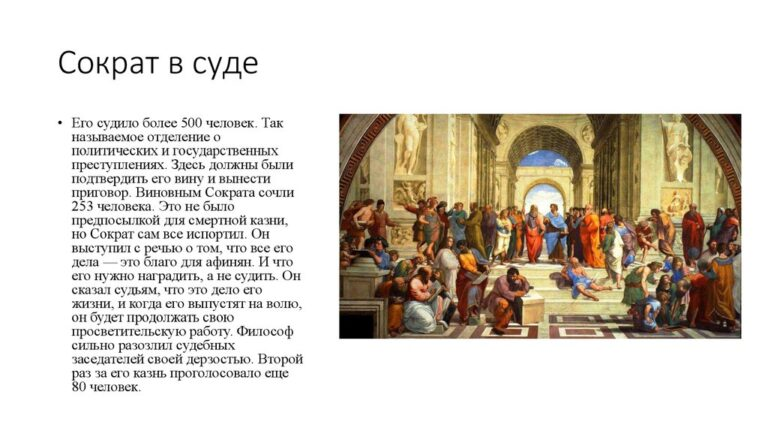

Ранние годы
Биография Сократа не слишком подробна. Известно, что он родился предположительно в 470 или 469 году до н. э. в семье каменщика Софрониска и Фенареты, которая была повивальной бабкой. Мальчик появился на свет в Афинах. Его родители были достаточно зажиточными горожанами, жили в деме Алопека. После смерти отца Сократ унаследовал часть его имущества, и вполне мог себе позволить вести праздную жизнь.
Юноша получил хорошее образование. Рано освоил навыки чтения и письма, совершенствовался в гимнастике и музыке, поэзии.
В период Пелопоннесской войны Сократ нес военную службу. Если верить его биографии в изложении Платона, даже отличился в нескольких кампаниях.
До 29 лет Сократ занимался ремеслом каменщика, продолжая дело отца. И лишь на пороге тридцатилетия решил отринуть условности, и избрал путь странствующего философа. Но и здесь был оригинален: не участвовал в дебатах как оратор, отказывался от создания собственной школы, избегал получать материальные блага от последователей.
Личная жизнь
В отличие от многих философов, презиравших узы брака и условности, в личной жизни Сократ придерживался традиционных устоев. Он был женат дважды. В первый брак с Ксантиппой состоялся достаточно поздно. Сократу было уже немало лет (более 50). В этом союзе было рождено трое сыновей. Кстати, Ксантиппа занятия супруга всерьез не воспринимала. А ее ворчание вошло в историю как пример сварливости женщины в браке.
Второй супругой Сократа стала дочь философа Аристида. На самом деле, неизвестно, какой из браков был первым. Но традиционно упоминается именно такой порядок.
Суд
В 399 году Сократа, никогда не снисходившего даже до записи своих мыслей и идей на бумаге, объявили нечестивцем, развращающим молодые умы. Дело сформировали, и вынесли на обсуждение общественности. В качестве присяжных вердикт выносили другие граждане Афин, несколько сотен человек, все мужского пола.
Смерть
Сократ умер в 399 году до н. э. в Афинах, в возрасте 70 лет, в тюрьме. Накануне над ним состоялся суд, признавший философа виновным в развращение умов молодежи. В последний день Сократ провел много времени с учениками и друзьями.
Они даже разработали для него план побега. Но Сократ от него отказался. На следующее утро он исполнил приговор, приняв яд болиголова. И спустя несколько минут умер.
Философия Сократа
Вся философская школа, построенная на идеях Сократа, базируется на методе опровержения. То есть, на постижении истины в споре, где учитель задает тему и инициирует диалог, а ученики пытаются высказывать свои суждения. Наставник же их опровергает, находя необходимые аргументы.
Суть сократической философии проста: даже не имея своего точного мнения или знания по конкретному вопросу, можно прийти к истине, если задавать правильные вопросы, и проявлять скептицизм. Фактически, Сократ признавал, что он невежественен, и был готов признать правоту собеседника, если тот найдет достаточные аргументы. Это позволяло отрицать идеи догматов и абсолютного знания. Ведь на одно и то же событие, объект, предмет может быть много точек зрения.

В этом же состоит и главный недостаток сократовской философии. Ведь она не устанавливает правдивость или ложность суждения. А лишь помогает доказать, что собеседник непоследователен, и может менять свое мнение в ходе диалога. То есть, и сам далек от истины.
В основу философии Сократа заложена идея поиска определения. То есть, отправной точки в диалоге. Философ нередко вступал в споры о добродетели, приводя примеры ее существования. Тогда как приверженцы софизма в то время вовсе отрицали это понятие.
В изложении своих учеников, Сократ всегда непоследователен. Заявляя о своем невежестве он тут же приводит в пример факты. Даже во время суда философ остался верен себе. Возможно, так он проявлял свою иронию, фактически являясь одним из самых известных мыслителей в Афинах. Но есть в таком поведении и педагогический фактор. Заведомо уступая оппоненту шанс на победу в диалоге Сократ учил того мыслить самостоятельно, не шаблонно. Этим и ценно его наследие как философа.Фраза: «Я знаю, что ничего не знаю», вложенная в уста Сократа Платоном, лучше всего отражает его отношение к жизни. Но в то же время философ, судя по записям его учеников, все же имел довольно четкие понятия морали, добра и зла.